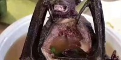

Pagina Inicial
Morcego no Espeto

Ingredientes:
- 2kg de patinho em cubos
- Sal e pimenta do reino a gosto
- 1 cebola ralada
- 2 dentes de alho amassados
- 1 xícara (chá) de vinho tinto seco
- 2 colheres (sopa) de salsa picada
- 2 colheres (sopa) de azeite
Modo de Preparo:
- Tempere, em uma tigela, a carne com sal, pimenta, a cebola, o alho e o vinho.
- Acrescente a salsa e o azeite e deixe descansar por 30 minutos.
- Espete os cubos de carne no palito de churrasco e leve à grelha da churrasqueira.
- Asse por 15 minutos ou até dourar por igual, virando de vez em quando.
- Se desejar, sirva acompanhado de arroz e salada de alface e tomate.